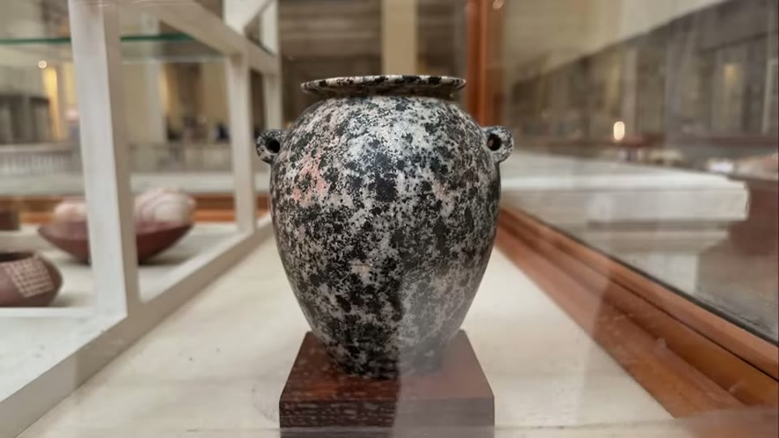
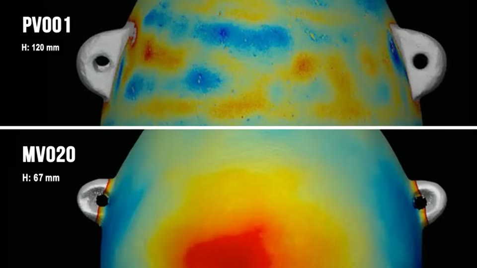
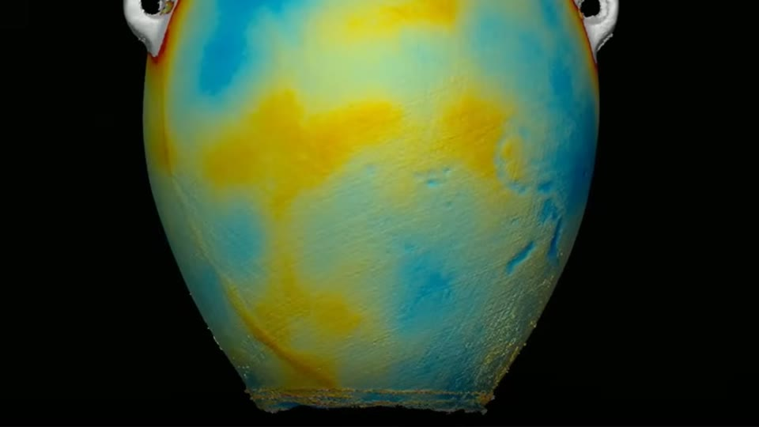

Curious Being
What They are Not Telling You About Precise Egyptian Stone Vases?
Tina · 27 min · watch on YouTube · summarised 2026-08-23
The claim is probably the best known in the whole field: a handful of predynastic Egyptian stone vases, the "OG vases", are so precise that modern CNC machinery could not reproduce them. This video is about what happened to that claim between 2023 and 2025, and almost all of the evidence in it comes from people who set out to prove it true.
Three researchers, and what changed their minds
Mark Quest, an engineer, made the original claim 00:57–01:35. In January 2023 UnchartedX published a scan of the vase PV001, from Adam Young's collection, produced by Alex Dunn using structured light scanning. Quest ran geometrical analyses and CAD models on that data, proposed that the vase's form followed mathematically coherent design principles, and said he doubted modern CNC machinery could replicate it. That remark is the source of the claim as everyone now repeats it. He was, at the time, explicitly uncertain about the vase's authenticity and asked for further investigation.
A 2025 CT scan then delivered over five times more vertices at significantly finer resolution, capturing the vessel's complete geometry rather than its outer surface 01:19–01:38. After reading a 2025 report based on the new data, Quest wrote 05:35–06:05:
the object itself, or at least its current form, is definitely not 5,000 years old. It's either a modern replica, contemporary piece, or it was acquired as an ancient article, but later reworked to achieve its extraordinary qualities and features.
Max Fomitchev-Zamilov, a physicist and engineer, also began convinced the vases could not have been made with ancient Egyptian tools 01:39–02:00. He travelled overseas at his own effort to scan museum artefacts and privately held pieces, published his scanning results, calculations and metrics openly, and reversed his position on the evidence.
Stine Gerdes did the work that changed Quest's mind 06:05–07:21. Intrigued by the 2023 article, she spent thirty months on precision documentation, working with Adam Young and later his Artifact Foundation from mid-2023 to February 2025 with access to Young's scan data, supplying the metrological analysis and precision reports. She used high-resolution 3D scans of 32 vessels from the Petrie Museum, compared against privately held ultra-precise items, modern lathe-made objects and hand-made replicas, and published her evaluation metrics and a per-vase assessment for review.
The falling-out
This is the part the video exists to report 07:21–08:30.
Gerdes records that the break came in February 2025, when a hand-made alabaster vase showed unexpected precision in her analysis and Young dismissed the result. She further states that at the 2024 Cosmic Summit, Young used incorrect data to make CNC-machined replica vases appear far less precise than the ancient artefact they were being compared with, and that for the ancient side of the comparison he substituted data from his own private piece PV002 in place of the actual artefact PV006.
Young and the Artifact Foundation threatened legal action against her if she published.
What the scans found
Museum vessels are indistinguishable from modern hand-made replicas 08:30–09:00. That is Gerdes' central conclusion from the Petrie material, matching a finding published in Heritage Science, and matching Fomitchev-Zamilov's independent result despite different calculations. The museum pieces sit within the limits of hand-guided craftsmanship — and are less precise than the privately owned OG vases.
The specific evidence is an axis measurement 09:19–09:45. In every Petrie artefact analysed, the central axis of the interior does not align with the axis of the exterior, and the upper and lower portions of each surface often follow distinct sub-axes. The replica RV003, made by Olga Vidovina using only copper tools to simulate ancient technique, shows a nearly identical pattern of axial segmentation.

In every Petrie vessel the interior and exterior axes fail to align - and a replica made with copper tools only shows nearly the same pattern.
The report page she shows gives this quantitatively, comparing the ancient artefact MV003b against the replica RV003 on root mean square deviation, standard deviation and range of residuals — and notes a real difference between them in axial stability within each phase, even though the segmentation pattern itself matches.
And the metric used to argue the opposite is manipulable 09:45–10:20. Gerdes shows that rotating artefact MV008 by 0.05 degrees improved its geometric mean score by 17% — so the figure at the centre of the Artifact Foundation's case can be moved substantially by alignment changes too small to notice.
Her comment on where this leaves the field 10:33–10:52:
the dogma that the alternate history community accuses archaeologists of, that they hold on to beliefs in spite of counter evidence, seems to also be true within that very community.
The precision numbers, stated plainly
Of roughly 56 scanned vessels said to be predynastic, only about four or five are micron-level precise, and all of them are privately owned [02:56–03:20, 11:11–11:20].
The comparison she puts on screen 12:05–12:50:
| circularity | |
|---|---|
| Young's ultra-precise red granite vessels | 9.4–10 µm, opening ~25.4 µm |
| standard artisan lathe work | around 100 µm |
| high-end CNC machining and polishing | 5–15 µm, and 5–20 µm on hard stone |
On these figures modern machining matches or exceeds the artefacts. Her explanation for why nobody sees stonework like this is economic rather than technical: there is no market for micron-precise stone vessels. She develops the point with semiconductors 13:05–14:00 — silicon is Mohs 7, harder than granite, and nanometre-scale chips are mass-produced globally because they are essential. Precision follows demand.
She also notes a weakness in the comparison set 14:00–14:27: the modern machine-made vases used as controls were bought from gift shops and eBay, and do not represent the best available machine work. Even so, they scan as significantly more precise than the average ancient example.
The interiors differ in kind, not just degree 14:27–15:10. The heat map of PV001 — 12 cm tall, the most precise vase in the set — shows tight horizontal lathe marks on the inside. Petrie Museum interiors show features matching hand drill work. The inner surface of V18, another ultra-precise private piece, resembles the lathe marks on a modern machined object — the report page she shows puts V18 beside a modern vessel logged as M8, both ringed with evenly spaced concentric grooves.

The interiors differ in kind: concentric lathe grooves in the private ultra-precise vessels, hand-drill features in the museum ones.
Provenance
Her framing is that the precision debate is downstream of a prior question 15:56–16:10: if the vases cannot be shown to be ancient and unmodified, their precision establishes nothing.
- None of the micron-precise vases has documented provenance tying it to an archaeological context 16:10–17:30. Eight of the 19 Petrie objects Fomitchev-Zamilov scanned have a record of the specific tomb they came from.
- Experts put the share of fakes or misattributions among antiquities on the open market at over half, possibly up to 80% 16:20–16:35.
- UnchartedX described one vase as having impeccable provenance, brought out by the Czechoslovakian ambassador to Egypt in the late 1800s. Czechoslovakia did not exist until 1918 17:55–18:20.
- The provenance offered for V18 goes back a few decades with no place of origin 18:40–19:00. The narration calls it an antique shop's certificate of authenticity; the document actually on screen is a dealer or catalogue page whose provenance line reads "Ex. Carl Tautenhahn collection, Houston. With copy of 9/28/1979 invoice." Either way there is no findspot, but the document is more specific than the narration describes it.

What the provenance for an ultra-precise vase actually consists of: a prior owner and a 1979 invoice, with no findspot.
- On style, she reads PV003 and PV006 as resembling New Kingdom vessels rather than predynastic Naqada ones 18:20–18:40.
Her own contribution: the lug handles
This section is original to the video and does not depend on anyone else's data 19:17–23:20. She overlaid front-view scans of similar small stone jars with ear-like lug handles — two OG vases and nine museum pieces, 6 to 14.4 cm tall — and found the museum handles share three features:
1. Each handle is a symmetrical C-shaped arch of fairly uniform thickness, tilted up like a popped-up ear, ranging from a rounded C to a slightly flattened one. 2. The handle's hole sits tangent to the outline of the vase body, touching it. She notes the practical reason: keeping the loop close to the body reduces the risk of a stone handle snapping off, and these handles were for suspension by string, not carrying. 3. The hole diameter is comparable to the handle thickness, and the two scale together — bigger vases, bigger holes and thicker handles.


The three features she finds on every museum lug handle: a symmetrical C-shaped arch, a hole sitting tangent to the vase body, and a hole diameter scaled to the handle's thickness.
PV001's handles break all three. They are much thicker with proportionally smaller holes; the holes neither touch nor run tangent to the body but stand offset out from it, making the handle D-shaped rather than C-shaped; and they are slightly droopy and lopsided rather than symmetrical. Her phrase for the difference is that the museum vases have lifted ears and the OG vase has set ones.


The most precise vase in the set breaks all three museum handle features - thicker lugs, proportionally smaller holes, and holes offset from the body rather than tangent to it, making the handle D-shaped rather than C-shaped.
A second private precise vase has the hole positions right but the same droop and the same undersized holes. V18's lugs are not symmetrical arches at all: one side of the handle root slopes and extends further than the other.
Her argument from this is about style, not precision. PV001 is the most precise vase in the set; if it is predynastic it should embody predynastic aesthetics, and its overall form does resemble Naqada jars. The handles do not. The work is exact and the style is wrong, which she offers as the kind of inconsistency that distinguishes a forgery from an authentic piece.
Two more surface observations
Abrasion marks 23:29–24:00. Most Petrie heat maps show diagonal or crisscross abrasion across the exterior, consistent with hand-held rubbing stones used for smoothing and polishing — the same marks appear on predynastic stone mace heads. These faint diagonal marks are absent from the ultra-precise vases.

Faint diagonal rubbing-stone marks cover the museum vessels and are absent from the ultra-precise private ones.
Condition 24:00–24:33. Fomitchev-Zamilov notes that the private OG vessels lack the weathering, chips and nicks expected of objects almost 6,000 years old, and look, as she puts it, like they were made yesterday.
The dual-origin answer, and the problem with it
Faced with museum vessels that scan no better than modern hand-made ones, Young and UnchartedX proposed that the ultra-precise vessels are 12,000-year-old remnants of an advanced civilisation and the predynastic Egyptian pieces are inferior later copies 24:33–25:08.
Her objection is one line, and it is the condition argument turned around: on that account the older objects are the ones showing less weathering and degradation than newly excavated Egyptian vessels.
She closes by noting that Fomitchev-Zamilov holds a sceptical openness rather than a verdict — that extreme precision makes an object more likely to be a modern forgery or a reworked ancient artefact — and that he continues to collaborate on further scientific testing 25:08–25:50.
What you can check yourself
- Gerdes' and Fomitchev-Zamilov's data and metrics are published, per-vase, and the video points at them. This is the rare case where the underlying evidence is open to anyone.
- The 0.05-degree rotation producing a 17% change in the geometric mean is a reproducible test on published scan data, and it is the single most decisive item here.
- The interior/exterior axis misalignment in the Petrie vessels, and the same pattern in a copper-tool replica, is measurable from the scans.
- CNC circularity tolerances of 5–20 µm on hard stone are ordinary industry figures, quotable from any precision machining supplier.
- The Czechoslovakia date is a one-line check: the country was founded in 1918.
- The lug handle features can be tested against any museum collection of Naqada jars with lug handles — she explicitly invites counter-examples.
- Diagonal abrasion marks on museum vessels and their absence on the ultra-precise ones is a photographic comparison.
- Which of the Petrie objects have a recorded findspot is a catalogue question.
What the video does not settle
- Absence of provenance is not proof of forgery, which she says herself. The strongest positive case here is stylistic and statistical, and neither is a direct test of age.
- No dating or material test is reported on any ultra-precise vase. Surface dating of stone is genuinely difficult, but nothing here reports an attempt — no tool-mark residue analysis, no patina study, no comparison of internal fabric.
- The lug handle argument rests on eleven vessels, two of them the objects in dispute. Nine museum examples is a small basis for a production standard, and she asks for counter-examples precisely because the sample cannot settle it alone.
- The handle comparison is made from overlaid front-view scans, so it measures profile rather than form, and how much of the asymmetry is orientation in the scan is not addressed.
- The dispute is reported from one side. Gerdes' account of the data substitution and the legal threat is presented as fact; no response from Adam Young or the Artifact Foundation is quoted or sought, and the video does not say whether one was requested.
- The controls were gift-shop vases, which she flags — the comparison set for modern machine work is admitted to be poor at the low end and is only argued about at the high end from published tolerance figures rather than from scanned objects.
- "About four or five of 56" is as close as the count gets. The narration is inconsistent on the number of ultra-precise vessels, and the total scanned set keeps growing.
- Nothing here touches the 40,000-plus vessels under the Step Pyramid, which she raises only to note that they are not all micron-precise. The general question of Egyptian stone vessel manufacture is untouched by this argument, which is about four privately owned objects.
See also
Megalithic Knobs Worldwide: Molded or Quarried — the other entry where she distinguishes a category before explaining it.
The Ancient Handbag Symbol — the other case of an alternative claim taken apart from inside the field.
What we have not checked
- Every name in this entry was mangled by the auto-captions and reconstructed from context and the video's own chapter titles. Treat all of them as needing confirmation before being repeated anywhere else:
- Stine Gerdes — confirmed. The captions render her as Steinhourders, Steinhardt, Stein and Stine Gergas, but the report screenshot on screen carries the credit line "Copyright Stine Gerdes, arcsci.org, license: CC BY-NC-SA 4.0". Her work is published at arcsci.org.
- Mark Quest — rendered as Marquis, Marquiz, Mack Quest. The surname is not confirmed and may not be Quest at all.
- Max Fomitchev-Zamilov — rendered as Formitchov Zemelov, Formitchav Zamolodov, Miyol, Mack. The spelling here is inferred, not heard.
- Adam Young — also rendered as Adam Iyengar, Adam Williamson, "Adam and Ian's". Confirmed by the chapter title "Fallout with Adam Young & Why".
- Matt Beall — confirmed. The captions render him as Mabeo, My Boat's, "Matt and Theo's" and "my Bial's", but two report screenshots on screen read "Matt Beall's collection".
- Olga Vidovina, credited with the copper-tool replica RV003 — not confirmed.
- Alex Dunn, son of Christopher Dunn, credited with the 2023 structured light scan.
- The person credited with spotting the Czechoslovakia error is rendered only as "nice guy", which is presumably a channel or handle and has not been identified.
- Object identifiers are inconsistent in the captions: PV001 also appears as PB001 and P1001; MV008 as MVOO8; V18 as WE18. PV002, PV003, PV006 and RV003 appear once or twice each.
- The journal is given as "Nature Heritage Sciences"; this is almost certainly Heritage Science, published under Nature Portfolio, but the paper itself has not been located.
- The count of ultra-precise vessels is given as "around four" at one point and garbled as "405 vases out of the 56" at another. Four or five is the reading taken here.
- None of Gerdes' or Fomitchev-Zamilov's published studies has been retrieved or read. The video says they are linked in its description. Until they are read, nothing in this entry should be cited as established beyond "she reports that".
- The Cosmic Summit data-substitution account, the legal threat, and the February 2025 alabaster vase incident are all Gerdes' account as relayed by the video, and are recorded here as such.